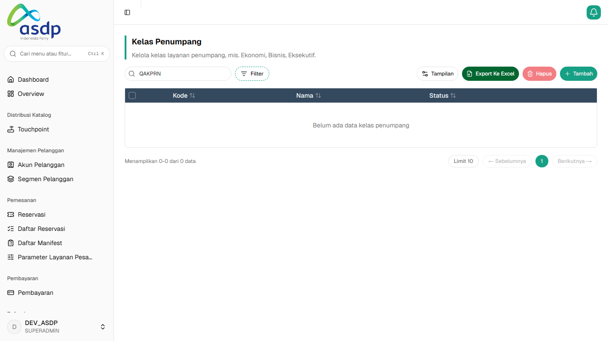
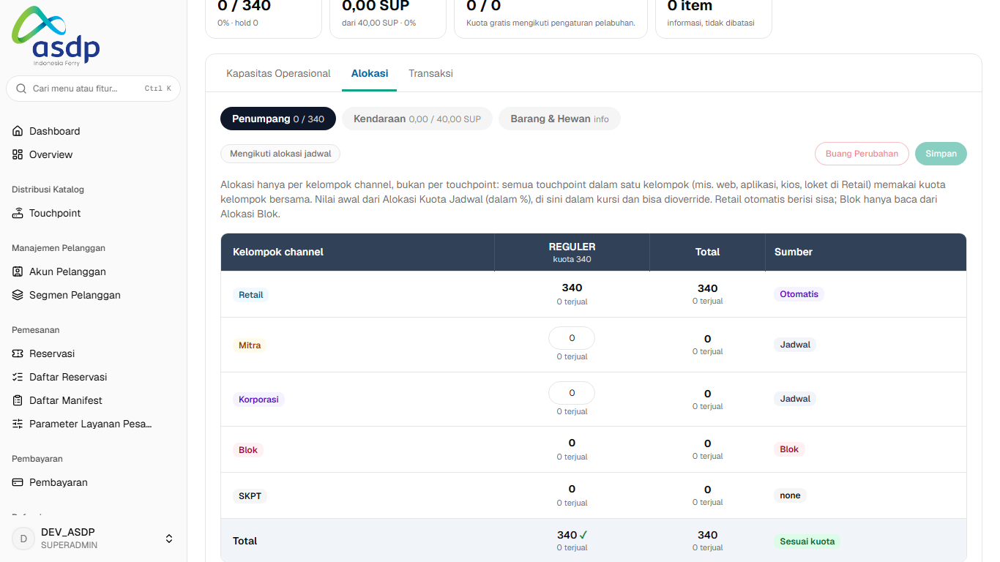
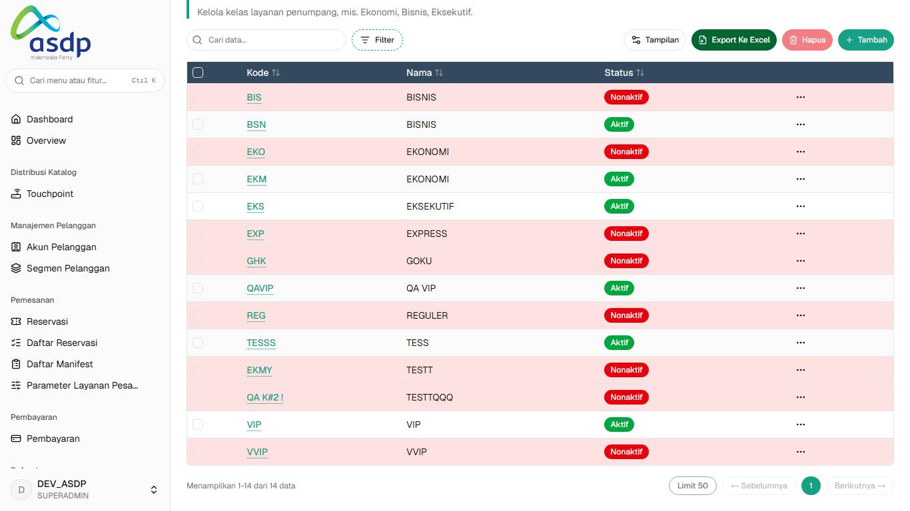
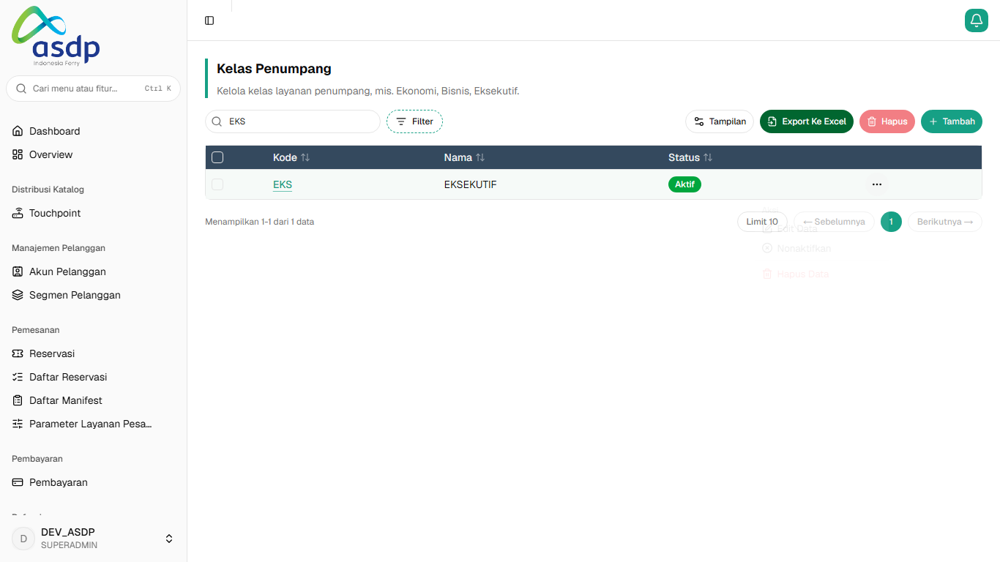
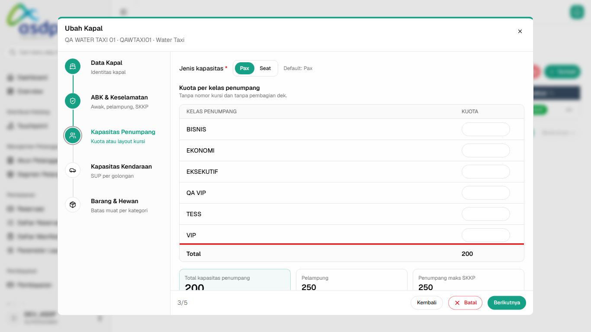

KK-T07 — Kelas penumpang yang masih dipakai kapal bisa dihapus Langkah: 1. Kapal QAKPKKTCX memakai kelas QAKPRN (kuota 5) 2. Menu Kelas Penumpang → QAKPRN → ⋯ → Hapus Data → Hapus Ekspektasi: Ditolak dengan pesan kelas masih dipakai kapal; kelas tetap ada Aktual: Toast: "Kelas penumpang berhasil dihapus"; kelas terhapus

[TEMUAN] KK-T07 — Kelas penumpang yang masih dipakai kapal bisa dihapus Langkah: 1. Kapal QAKPKKTCX memakai kelas QAKPRN (kuota 5) 2. Menu Kelas Penumpang → QAKPRN → ⋯ → Hapus Data → Hapus Ekspektasi: Ditolak dengan pesan kelas masih dipakai kapal; kelas tetap ada Aktual: Toast: "Kelas penumpang berhasil dihapus"; kelas terhapus (bukti: hasil\bukti\KK-T07_20261124-135434.png)
KK-T06 — Kelas yang Nonaktif / tidak ada di master masih dipakai di alokasi keberangkatan Langkah: 1. Keberangkatan & Alokasi → tanggal 2027-05-02 → LMB-PGA-2100 → tab Alokasi 2. Bandingkan kolom kelas dengan menu Kelas Penumpang Ekspektasi: Semua kelas di alokasi ada di master dan Aktif Aktual: Kelas di alokasi: REGULER. Masalah: "REGULER" Nonaktif di master

[TEMUAN] KK-T06 — Kelas yang Nonaktif / tidak ada di master masih dipakai di alokasi keberangkatan Langkah: 1. Keberangkatan & Alokasi → tanggal 2027-05-02 → LMB-PGA-2100 → tab Alokasi 2. Bandingkan kolom kelas dengan menu Kelas Penumpang Ekspektasi: Semua kelas di alokasi ada di master dan Aktif Aktual: Kelas di alokasi: REGULER. Masalah: "REGULER" Nonaktif di master (bukti: hasil\bukti\KK-T06_20261124-135610.png)
KK-T01 — Ada beberapa kelas penumpang dengan nama yang sama Langkah: 1. Buka menu Kelas Penumpang (Limit 50) 2. Lihat kolom Nama Ekspektasi: Nama kelas unik, supaya pilihan kelas di Kapal/Keberangkatan/Tarif tidak membingungkan Aktual: BISNIS: BIS (Nonaktif), BSN (Aktif); EKONOMI: EKO (Nonaktif), EKM (Aktif)

[TEMUAN] KK-T01 — Ada beberapa kelas penumpang dengan nama yang sama Langkah: 1. Buka menu Kelas Penumpang (Limit 50) 2. Lihat kolom Nama Ekspektasi: Nama kelas unik, supaya pilihan kelas di Kapal/Keberangkatan/Tarif tidak membingungkan Aktual: BISNIS: BIS (Nonaktif), BSN (Aktif); EKONOMI: EKO (Nonaktif), EKM (Aktif) (bukti: hasil\bukti\KK-T01_20261124-135613.png)
KK-T02 — Menu baris Kelas Penumpang memakai "Edit Data", menu master lain "Ubah Data" Langkah: 1. Buka menu Kelas Penumpang 2. Klik ⋯ pada kelas EKS Ekspektasi: Label konsisten "Ubah Data" Aktual: Menu: Edit Data, Nonaktifkan, Hapus Data

[TEMUAN] KK-T02 — Menu baris Kelas Penumpang memakai "Edit Data", menu master lain "Ubah Data" Langkah: 1. Buka menu Kelas Penumpang 2. Klik ⋯ pada kelas EKS Ekspektasi: Label konsisten "Ubah Data" Aktual: Menu: Edit Data, Nonaktifkan, Hapus Data (bukti: hasil\bukti\KK-T02_20261124-135615.png)
KK-T03 — Kuota kelas yang sudah Nonaktif tidak bisa dilihat/diubah di form Kapal, tapi tetap masuk total kapasitas Langkah: 1. Kapal QAWTAXI01 menyimpan kuota kelas REGULER (200) 2. Kelas itu Nonaktif di menu Kelas Penumpang 3. Kapal → QAWTAXI01 → Ubah Data → langkah 3 Ekspektasi: Kuota kelas nonaktif ditampilkan (ditandai nonaktif) atau tidak dihitung lagi di total Aktual: Baris kelas itu tidak tampil; Total 200

[TEMUAN] KK-T03 — Kuota kelas yang sudah Nonaktif tidak bisa dilihat/diubah di form Kapal, tapi tetap masuk total kapasitas Langkah: 1. Kapal QAWTAXI01 menyimpan kuota kelas REGULER (200) 2. Kelas itu Nonaktif di menu Kelas Penumpang 3. Kapal → QAWTAXI01 → Ubah Data → langkah 3 Ekspektasi: Kuota kelas nonaktif ditampilkan (ditandai nonaktif) atau tidak dihitung lagi di total Aktual: Baris kelas itu tidak tampil; Total 200 (bukti: hasil\bukti\KK-T03_20261124-135620.png)
Tidak ada test yang gagal.
Tidak ada gangguan koneksi.
Tidak ada.
| No | Berkas | Test | Jenis | Status | Detik |
|---|---|---|---|---|---|
| 1 | UI\kelas-penumpang-ubah.spec.ts | Kelas Penumpang — siklus data uji > [Positif] KK-30 Tambah kelas → muncul di daftar dengan nama & status Aktif | PEMERIKSAAN | LULUS | 5.2 |
| 2 | UI\kelas-penumpang-ubah.spec.ts | Kelas Penumpang — siklus data uji > [Dampak] KK-31 kelas baru (Aktif) muncul di form Kapal langkah 3 "Kuota per kelas penumpang" | PEMERIKSAAN | LULUS | 12.6 |
| 3 | UI\kelas-penumpang-ubah.spec.ts | Kelas Penumpang — siklus data uji > [Negatif] KK-32 kode kelas yang sudah dipakai → ditolak, tidak ada data ganda | PEMERIKSAAN | LULUS | 5.4 |
| 4 | UI\kelas-penumpang-ubah.spec.ts | Kelas Penumpang — siklus data uji > [Temuan] KK-T04 nama kelas yang sama dengan kelas lain (kode beda) seharusnya ditolak [perlu konfirmasi] | PEMERIKSAAN | LULUS | 5.2 |
| 5 | UI\kelas-penumpang-ubah.spec.ts | Kelas Penumpang — siklus data uji > [Positif] KK-33 Ubah nama → daftar ikut berubah; [Dampak] nama baru tampil di form Kapal | PEMERIKSAAN | LULUS | 16.6 |
| 6 | UI\kelas-penumpang-ubah.spec.ts | Kelas Penumpang — siklus data uji > [Dampak] KK-34 Nonaktifkan → Status "Nonaktif", menu jadi "Aktifkan", hilang dari form Kapal | PEMERIKSAAN | LULUS | 17.5 |
| 7 | UI\kelas-penumpang-ubah.spec.ts | Kelas Penumpang — siklus data uji > [Dampak] KK-35 Aktifkan kembali → Status "Aktif", muncul lagi di form Kapal; [Edge] nama tidak berubah | PEMERIKSAAN | LULUS | 15.2 |
| 8 | UI\kelas-penumpang-ubah.spec.ts | Kelas Penumpang — siklus data uji > [Negatif] KK-36 Hapus kelas yang DIPAKAI kapal → ditolak, kelas tetap ada | PEMERIKSAAN | LULUS | 4.3 |
| 9 | UI\kelas-penumpang-ubah.spec.ts | Kelas Penumpang — siklus data uji > [Edge] KK-37 Tambah kelas dengan status Nonaktif sejak awal → tersimpan Nonaktif, tidak ditawarkan di form Kapal | PEMERIKSAAN | LULUS | 15.8 |
| 10 | UI\kelas-penumpang-ubah.spec.ts | Kelas Penumpang — siklus data uji > [Positif] KK-38 Hapus Data → hilang dari daftar | PEMERIKSAAN | DILEWATI | 0.2 |
| 11 | UI\kelas-penumpang.spec.ts | Kelas Penumpang — daftar > [Positif] KK-01 halaman tampil: judul, toolbar, kolom Kode | Nama | Status, ringkasan data | PEMERIKSAAN | LULUS | 1.9 |
| 12 | UI\kelas-penumpang.spec.ts | Kelas Penumpang — daftar > [Positif] KK-02 cari berdasarkan kode → kelas itu ada di hasil | PEMERIKSAAN | LULUS | 2.1 |
| 13 | UI\kelas-penumpang.spec.ts | Kelas Penumpang — daftar > [Positif] KK-03 cari berdasarkan nama (huruf kecil) → semua hasil mengandung kata itu | PEMERIKSAAN | LULUS | 2.4 |
| 14 | UI\kelas-penumpang.spec.ts | Kelas Penumpang — daftar > [Negatif] KK-04 cari kata yang tidak ada → 0 data | PEMERIKSAAN | LULUS | 2.4 |
| 15 | UI\kelas-penumpang.spec.ts | Kelas Penumpang — daftar > [Edge] KK-05 cari dengan karakter khusus (%' <) → tidak error, 0 data | PEMERIKSAAN | LULUS | 2.7 |
| 16 | UI\kelas-penumpang.spec.ts | Kelas Penumpang — daftar > [Positif] KK-06 filter Aktif → semua Aktif; filter Nonaktif → semua Nonaktif | PEMERIKSAAN | LULUS | 3.6 |
| 17 | UI\kelas-penumpang.spec.ts | Kelas Penumpang — daftar > [Positif] KK-07 sort Kode & Nama: klik kedua membalik urutan | PEMERIKSAAN | LULUS | 6.4 |
| 18 | UI\kelas-penumpang.spec.ts | Kelas Penumpang — daftar > [Positif] KK-08 lebih dari 10 kelas → Berikutnya menampilkan sisanya | PEMERIKSAAN | LULUS | 2.0 |
| 19 | UI\kelas-penumpang.spec.ts | Kelas Penumpang — daftar > [Positif] KK-09 Export Ke Excel (hasil cari) → file berisi kode kelas | PEMERIKSAAN | LULUS | 7.2 |
| 20 | UI\kelas-penumpang.spec.ts | Kelas Penumpang — daftar > [Positif] KK-10 menu ⋯: kelas Aktif → Nonaktifkan; kelas Nonaktif → Aktifkan (+ ubah & hapus) | PEMERIKSAAN | LULUS | 4.6 |
| 21 | UI\kelas-penumpang.spec.ts | Kelas Penumpang — form (tanpa menyimpan) > [Negatif] KK-11 Simpan form kosong → "Kode … wajib diisi" & "Nama … wajib diisi", form tetap terbuka | PEMERIKSAAN | LULUS | 4.4 |
| 22 | UI\kelas-penumpang.spec.ts | Kelas Penumpang — form (tanpa menyimpan) > [Positif] KK-12 status default form Tambah = Aktif | PEMERIKSAAN | LULUS | 4.5 |
| 23 | UI\kelas-penumpang.spec.ts | Kelas Penumpang — form (tanpa menyimpan) > [Edge] KK-13 kode 30 karakter / huruf kecil / simbol → dibatasi atau ditolak (tidak tersimpan apa adanya) | PEMERIKSAAN | LULUS | 4.1 |
| 24 | UI\kelas-penumpang.spec.ts | Kelas Penumpang — form (tanpa menyimpan) > [Positif] KK-14 Batal: form kosong langsung tertutup; form terisi → konfirmasi → Kembali → isian tetap | PEMERIKSAAN | LULUS | 6.5 |
| 25 | UI\kelas-penumpang.spec.ts | Kelas Penumpang — form (tanpa menyimpan) > [Positif] KK-15 Ubah/Edit Data: isian sama dengan baris di tabel; tutup tanpa perubahan → tanpa konfirmasi | PEMERIKSAAN | LULUS | 4.5 |
| 26 | UI\kelas-penumpang.spec.ts | Kelas Penumpang — dampak > [Dampak] KK-20 form Kapal langkah 3 hanya menawarkan kelas AKTIF dari master Kelas Penumpang | PEMERIKSAAN | LULUS | 15.5 |
| 27 | UI\kelas-penumpang.spec.ts | Kelas Penumpang — dampak > [Dampak] KK-21 kelas di tabel Alokasi Keberangkatan ada di master Kelas Penumpang & Aktif | PEMERIKSAAN | LULUS | 4.9 |
| 28 | UI\kelas-penumpang.spec.ts | Kelas Penumpang — temuan > [Temuan] KK-T01 nama kelas seharusnya unik (tidak ada dua kelas bernama sama) [perlu konfirmasi] | PEMERIKSAAN | LULUS | 2.8 |
| 29 | UI\kelas-penumpang.spec.ts | Kelas Penumpang — temuan > [Temuan] KK-T02 label menu "Edit Data" seharusnya "Ubah Data" seperti menu master lain | PEMERIKSAAN | LULUS | 1.9 |
| 30 | UI\kelas-penumpang.spec.ts | Kelas Penumpang — temuan > [Temuan] KK-T03 kuota kelas NONAKTIF di kapal tidak terlihat di form Kapal tapi tetap dihitung di total [perlu konfirmasi] | PEMERIKSAAN | LULUS | 7.4 |
Kelas Penumpang — siklus data uji > [Positif] KK-38 Hapus Data → hilang dari daftar: KK-30 / KK-36 sudah menghapus kelas